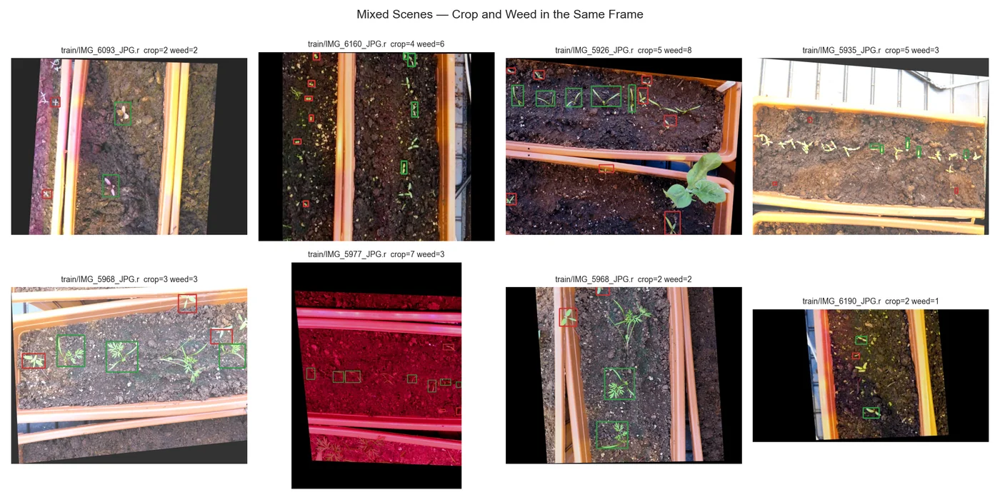
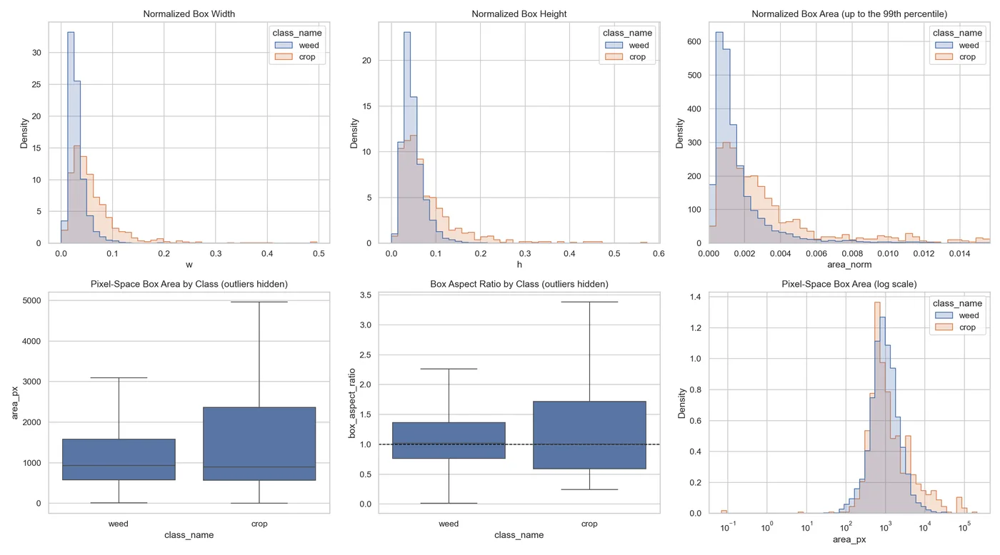
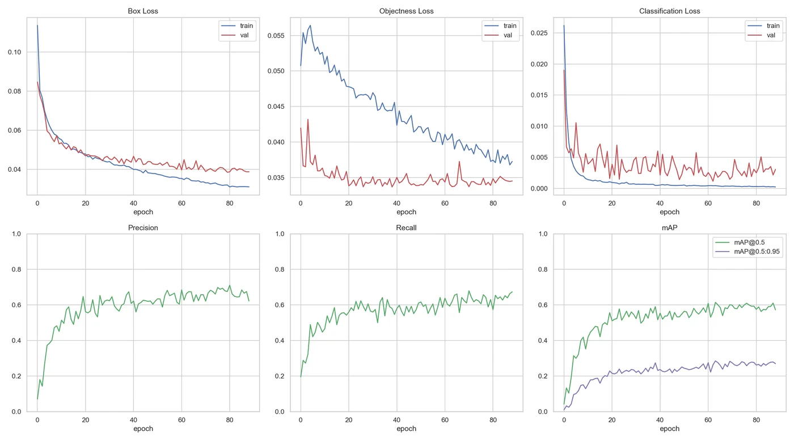
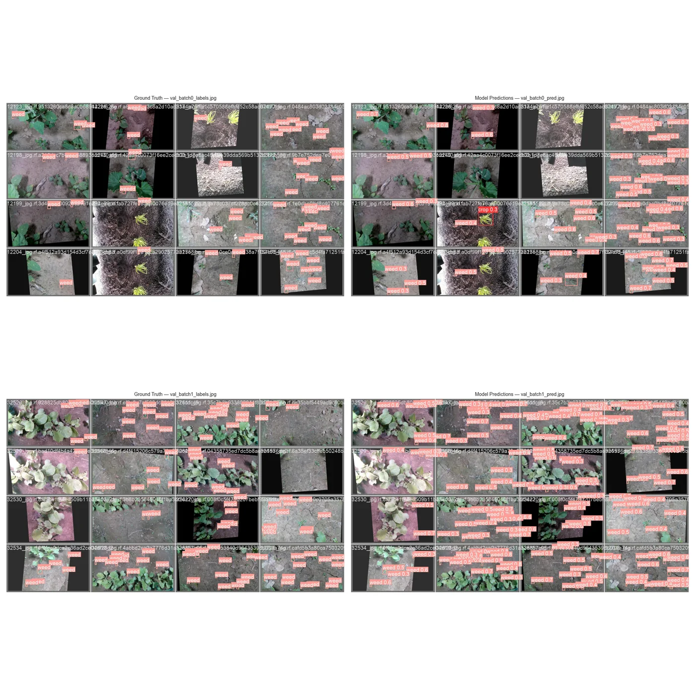
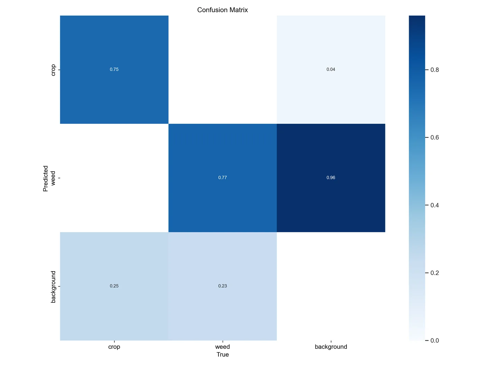
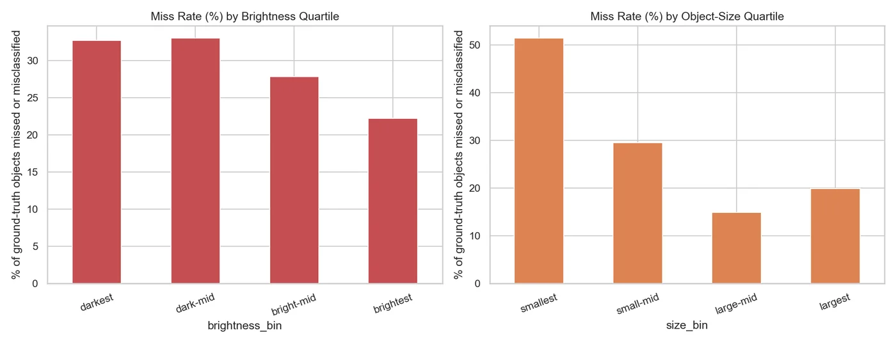
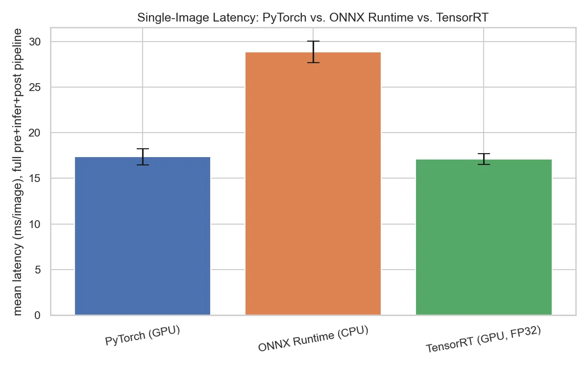
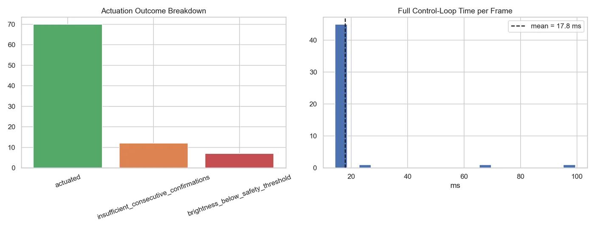
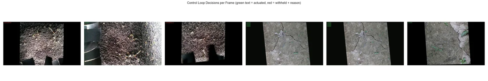

The problem
Weeds compete with crops for water, light and nutrients, and removing them by hand is slow while blanket herbicide spraying treats the whole field to reach a few plants. A robot that can see a weed and remove just that plant is an appealing alternative, but it is a hard mechatronics problem: perception and actuation have to agree in real space, not just on a screen.
A false positive can uproot a crop. A slow loop can miss the weed. A perfect detector is useless if the coordinate transform is off by a few centimetres. This project works through that whole chain, from the dataset to the robot command, for an NVIDIA Jetson Nano and an igus 3-DOF Delta parallel robot.

System at a glance
| Area | Summary |
|---|---|
| Dataset | 2,822 images, 14,919 annotations, two classes: crop and weed |
| Best model | YOLOv5m, test mAP@0.5 0.701, recall 0.738 |
| Edge formats | PyTorch, ONNX and TensorRT, with parity and latency checks |
| Robot | igus Delta parallel robot, 3 DOF, 1000 mm class, 2.5 kg payload |
| Jetson stack | RealSense RGB camera, DeepStream, TensorRT, YOLOv5, Python controller |
| Safety | ROI filtering, confidence threshold, repeated-frame confirmation, workspace limits, emergency stop |
The work is organised as fifteen numbered notebooks, from the dataset audit through to the
field-validation plan, plus a separate jetson_robot package for deployment.
Understanding the data first
Before training anything, the dataset was audited for missing labels, missing or corrupted images, unsupported formats and duplicates. It scored 97.14 / 100 on the health check. The audit also exposed the main challenge: the classes are heavily imbalanced. Weeds account for 94% of the 14,919 boxes and crops for just 6%.




Further notebooks checked for leakage between splits, analysed near-duplicates, corrected the splits, measured the effect of brightness correction and confirmed that augmented images kept their labels and a realistic field appearance.
Training two models
Two YOLOv5 variants were trained and compared on the held-out test set. The medium model is slightly more accurate; the nano model is ten times smaller, which matters on a Jetson Nano.
| Model | Size | Train time | Precision | Recall | mAP@0.5 | mAP@0.5:0.95 |
|---|---|---|---|---|---|---|
| YOLOv5n | 3.7 MB | 92.5 min | 0.719 | 0.708 | 0.682 | 0.344 |
| YOLOv5m | 40.2 MB | 216.4 min | 0.719 | 0.738 | 0.701 | 0.363 |






Where the model fails, and why it matters
For a robot, the type of error matters more than the average score. A missed weed is a minor loss; a crop wrongly classified as a weed is damage. The error-analysis notebook separates true positives, false positives and false negatives, and measures how errors change with lighting, crowding and object size.


Getting it onto edge hardware
The nano model was exported to ONNX and TensorRT. Each format was checked for parity against a reference and benchmarked for latency:
| Format | Backend | Size | Latency | Parity |
|---|---|---|---|---|
| PyTorch (.pt) | PyTorch, GPU | 3.9 MB | 16.96 ms | Reference |
| ONNX | ONNX Runtime, CPU | 7.8 MB | 33.26 ms | 85.8% (different preprocessing) |
| TensorRT (FP32) | TensorRT, GPU | 10.3 MB | 17.12 ms | 100% vs ONNX (matched preprocessing) |


These timings were measured on the development GPU, not yet on the Jetson Nano itself. They show that the pipeline is feasible and that the TensorRT engine is numerically faithful; on-device numbers come next.
From a bounding box to a robot motion
A detection only becomes useful once it turns into a safe physical motion:
camera frame (RealSense RGB, DeepStream v4l2src)
→ YOLOv5 TensorRT inference (nvinfer)
→ keep weed class, confirm across 2 frames, confidence ≥ 0.50
→ weed ROI midpoint
→ pixel-to-robot coordinate transform
→ Delta inverse kinematics
→ approach / pluck / retract trajectory
→ serial or TCP command to the robot controllerA Delta robot is a parallel mechanism: three arms share the load of one end effector. It gives stiffness and precise positioning inside a bounded workspace, which suits a tool that has to strike a small target point. The inverse kinematics are derived in the project notes, and the trajectory planner generates the approach, pluck and retract motion.
Safety comes before motion
Combining vision with a physical actuator means safety cannot be an afterthought. The
controller defaults to a dry-run transport that prints commands instead of
moving hardware; real motion needs an explicit --enable-motion flag. Detections
must pass several gates before any command is issued:
- a region-of-interest filter and crop-clearance check;
- a confidence threshold of 0.50;
- confirmation across two consecutive frames;
- workspace limits for the Delta robot;
- support for a hardware emergency stop.
The simulated control loop
Before touching hardware, the whole loop was run in simulation:
| Metric | Value |
|---|---|
| Frames processed | 48 |
| Tracked detections | 89 |
| Actuation commands issued | 70 |
| Mean loop time | 17.76 ms |
| Loop rate | 56.3 FPS |




The latency budget is honest about what is still unknown. Of an estimated 80 ms from camera capture to actuator response, only the inference step is measured; capture, preprocessing, communication and the robot's mechanical response are still placeholders until the hardware is in the loop.
What comes next
The final notebook defines a field-validation protocol with sample-size planning and rollout gates: dry runs first, then slow supervised commissioning with an emergency stop, then autonomous trials. The goal is a robot that removes weeds selectively and uses less herbicide, and that is precise enough for a farmer to trust. That only happens when the vision, the kinematics and the mechanics are tested together.